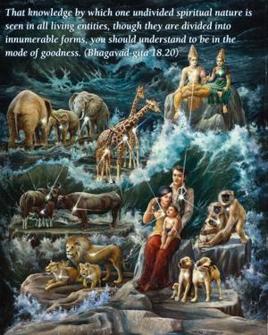
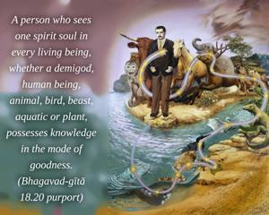
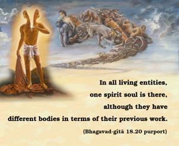

That knowledge by which one undivided spiritual nature is seen in all living entities, though they are divided into innumerable forms, you should understand to be in the mode of goodness.



A person who sees one spirit soul in every living being, whether a demigod, human being, animal, bird, beast, aquatic or plant, possesses knowledge in the mode of goodness. In all living entities, one spirit soul is there, although they have different bodies in terms of their previous work. As described in the Seventh Chapter, the manifestation of the living force in every body is due to the superior nature of the Supreme Lord. Thus to see that one superior nature, that living force, in every body is to see in the mode of goodness. That living energy is imperishable, although the bodies are perishable. Differences are perceived in terms of the body; because there are many forms of material existence in conditional life, the living force appears to be divided. Such impersonal knowledge is an aspect of self-realization.